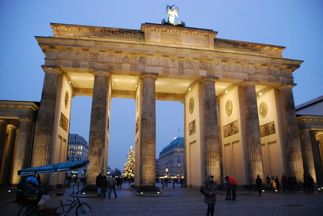

Welcome to Architektur
GK3 Home - GK3 Architektur
2020.12.13 11:09
Team Kompetenzen Projekte Kontakt
Wer ist GK3?
Wir sind Architekten und Sachverständige in Essen Stadtwald.
Anspruchsvoll, mit frischen Ideen und viel Erfahrung unterstützen wir Ihre Bauprojekte jeder Art. Ihr Zuhause ist unsere Vision, Ihre Immobilie unsere Aufgabe.
Die Planung und Realisation Ihrer Architektur ist unser täglich Brot, hierbei erbringen wir alle Leistungsphasen der HOAI bei Neubauten und Bestandsimmobilien, bei der Sanierung und der Modernisierung.
Unsere Lösungen architektonischer Aufgaben lassen sich messen am hohen Anspruch an technischer Ausstattung, ökologischen Anforderungen und energetischen Standards. Hierbei liegt unser Fokus stets auf der Wahrung wirtschaftlicher Interessen unserer Bauherren und der Entwicklung ökonomisch sinnvoller Lösungen.
Wir realisieren unsere Architektur im respektvollen und harmonischen Umgang mit unserer Umwelt, hochwertige Baukultur findet bei uns eine nachhaltige neue Ausdrucksform für eine Zukunft zum Wohlfühlen.
Team
Janine Knust
Heinz Gunkel
MAtthias Knauff
Laura Göhl
MArius Wulf
Kompetenzen
Planung
Gemeinsam mit den Bauherren und den weiteren beteiligten Fachplanern konzeptionieren wir Neu-/ Umbauten von den ersten Skizzen über die Entwurfs- und Genehmigungsplanung bis zur baureifen Ausführungsplanung.
Baubetreuung
Ergänzend zur Planung schreiben wir alle Baumaßnahmen neutral, kostenorientiert und nach den gängigen Förder-richtlinien aus, beraten Sie in Vergabegesprächen mit den bauausführenden Unternehmen, begleiten Ihr Projekt während der gesamten Bauphase und koordinieren alle Arbeiten bis zu Fertigstellung.
SACHVERSTÄNDIGENWESEN/ SCHADENSBEWERTUNG
Im Dialog mit den am Bau Beteiligten unterstützen wir Sie bei Bauschäden und Baumängeln als Sachverständige für Schäden an Gebäuden. Wir erstellen Ursachenanalysen, Mängelbeseitigungskonzepte und Kostenermittlungen und vertreten Sie gegenüber Ihren Partnern, Auftragnehmern und Gerichten.ProjektE
Sanierung einer Wohnanlage, Duisburg Rheinhausen
Durch die Erweiterung und Neuerrichtung der Balkonanlagen, sowie Sanierung der Fassaden und Treppenhäuser wurde die Wohnqualität von ca. 100 Wohnungen nachhaltig verbessert.
Wohnen auf Zeit, Essen Holsterhausen
Für Familienangehörige von Kindern, die sich im Essener Universitätsklinikum einer Krebstherapie unterziehen entstand in unmittelbarer Nachbarschaft zum Klinikum auf einem Eckgrundstück ein Wohnhaus mit Hotelcharakter. Die Essener Elterninitiative zur Unterstützung krebskranker Kinder e.V. bietet nun am Standort weitere 14 Familienzimmer mit eigenen Bädern, Küchen und Gemeinschafträumen sowie Büroeinheiten für die eigene Arbeit an.
Sanierung der Mischanlage UNESCO-Welterbe Zollverein, Essen
Das Baudenkmal wurde zu einer vielseitig nutzbaren Eventlocation auf drei Ebenen umgebaut und aufwändig saniert. Die Mischanlage dient als Veranstaltungsort der Ruhrtriennale und bietet modernen Kunstausstellungen eine einzigartige Plattform.
Neubau eines Wohngebäudes, Essen Rüttenscheid
Nach dem Abriss eines Mehrfamilienwohnhauses sind auf dem Grundstück in dem beliebten Stadtteil Rüttenscheid 7 Wohneinheiten und eine großzügige Büroeinheit entstanden. Das Hybridgebäude ist mit einem Aufzug ausgestattet und bietet einen ebenerdigen Kellerzugang sowie Garagenstellplätze.
Anbau an ein Einfamilienhaus, Moers
Neben dem bestehenden Altbau wurde ein Anbau in Holzbauweise mit über 50 m² Wohn- und Küchenraum ergänzt. Der neue Gebäudeteil setzt sich auch in seiner Materialität und Kubatur deutlich vom Altbau ab und bietet spannende Außenräume sowie Terrassenflächen.
Neubau eines Einfamilienhauses, Essen Bedingrade
Die zwei Wohngeschosse wurden in Holzständerbauweise auf dem massiven Keller errichtet. Unter Verwendung baubiologisch unbedenklicher und nachhaltiger Materialen entstand das Gebäude in zweiter Reihe unter weiterer Ausnutzung der Grundstückstiefe.Sanierung einer Hochhaussiedlung, Ennepetal
Die Wohnsiedlung der 70iger Jahre wurde den heutigen Wohnbedürfnissen und energetischen Anforderungen angepasst. Der demographische Wandel in der Gemeinde führte zur Entscheidung über den Abriss von 4 Hochhäusern der Siedlung und Modernisierung der übrigen Gebäude zu barrierefreien Wohnungen auf Neubauniveau.
Anbau an ein bestehendes Einfamilienhaus, Essen Bredeney
Der Altbau wurde um einen schlichten Kubus ergänzt und bietet den Bewohnern nun großzügige Wohnräume und
Sie wollen bauen, umbauen, modernisieren oder abreißen?
Erzählen Sie uns von Ihrem Projekt und vereinbaren Sie ein unverbindliches Kennenlerngespräch.
Wir freuen uns schon auf die Zusammenarbeit.
Adresse
45134 Essen Frankenstraße 233
Tel.
+49 201 777861
mail@gk3-architektur.de
Impressum und Datenschutzerklärung
We use cookies on our website to give you the most relevant experience by remembering your preferences and repeat visits. By clicking “Accept”, you consent to the use of ALL the cookies. Cookie settings ACCEPT Manage consent ClosePrivacy Overview
This website uses cookies to improve your experience while you navigate through the website. Out of these, the cookies that are categorized as necessary are stored on your browser as they are essential for the working of basic functionalities of the website. We also use third-party cookies that help us analyze and understand how you use this website. These cookies will be stored in your browser only with your consent. You also have the option to opt-out of these cookies. But opting out of some of these cookies may affect your browsing experience. Necessary Necessary Always EnabledNecessary cookies are absolutely essential for the website to function properly. This category only includes cookies that ensures basic functionalities and security features of the website. These cookies do not store any personal information.
Non-necessary Non-necessaryAny cookies that may not be particularly necessary for the website to function and is used specifically to collect user personal data via analytics, ads, other embedded contents are termed as non-necessary cookies. It is mandatory to procure user consent prior to running these cookies on your website.
